Laporan Praktikum 9: Implementasi Autentikasi dan Manajemen Data Pengguna
Mata Kuliah: Pemrograman Web • Universitas Andalas
Pendahuluan
Praktikum ke-9 ini membahas tentang implementasi fitur autentikasi bawaan dari ekosistem Laravel (Laravel UI Bootstrap), kustomisasi skema tabel pengguna menggunakan Database Migration, integrasi kerangka antarmuka administrator pihak ketiga (SB Admin 2), serta pembangunan modul manajemen data berbasis Resource Controller demi mencapai alur kerja operasi berformat lengkap CRUD (Create, Read, Update, Delete).
1. Inisialisasi Proyek & Konfigurasi Auth Scaffolding
Langkah operasional pertama diawali dengan menginstal dependensi installer global Laravel, dilanjutkan dengan perintah eksekusi inisialisasi direktori instalasi proyek web baru bernama laravel-sisfo di dalam environment local server Apache htdocs:
composer global require "laravel/installer"
laravel new laravel-sisfo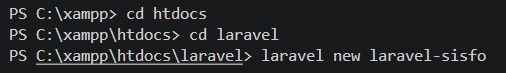
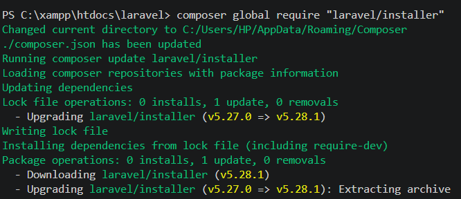
Selama proses pembuatan struktur, sistem memberikan opsi pemilihan Starter Kit dan sistem pengujian. Penulis memilih opsi tanpa starter kit (None) karena integrasi visual Bootstrap akan ditangani secara terpisah menggunakan pustaka UI eksternal, dengan memilih Pest sebagai testing framework bawaannya.
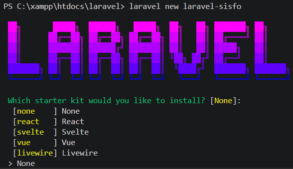
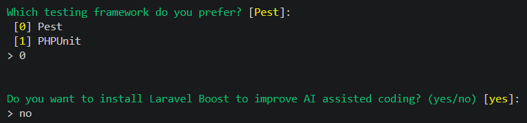
Tahap penataan berikutnya adalah menyesuaikan variabel konektivitas basis data pada file konfigurasi lingkungan .env. Pengaturan diatur menggunakan driver SQLite (sqlite) dengan penamaan skema database laravel_sisfo.
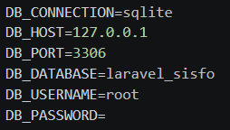
Aplikasi kemudian diuji menggunakan server lokal artisan. Antarmuka welcome page Laravel berhasil diekstrak dan disajikan secara normal pada alamat port 127.0.0.1:8000.
php artisan serve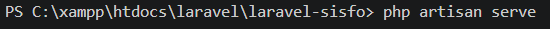
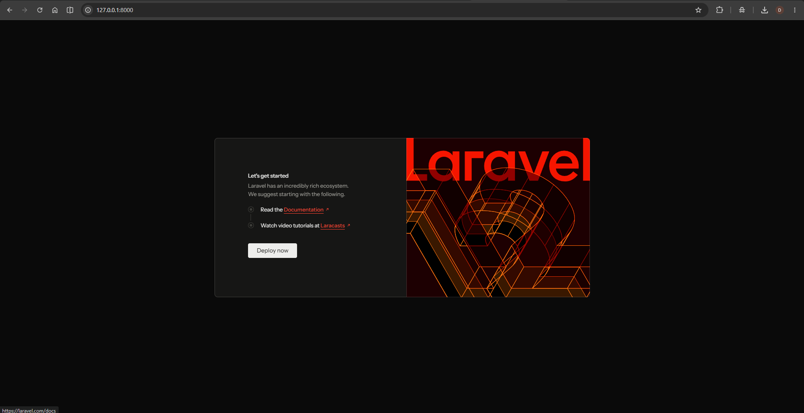
Untuk mempercepat pembuatan fitur pendaftaran dan autentikasi, penulis memasang dependensi paket laravel/ui, diikuti dengan menjalankan generator perintah Bootstrap berparameter otorisasi penuh:
composer require laravel/ui
php artisan ui bootstrap --auth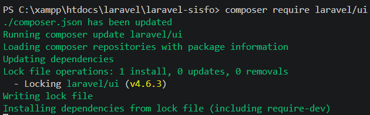
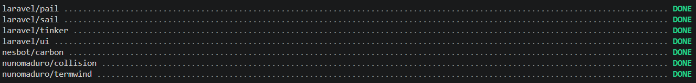
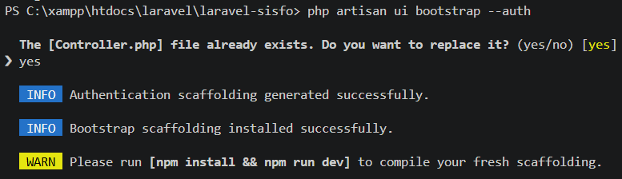
Sebagai bagian dari instruksi kompilasi modul frontend baru, perintah manajemen paket npm install dijalankan untuk mengunduh modul aset, kemudian dilanjutkan dengan menjalankan perintah npm run dev demi mengaktifkan server build Vite secara langsung (real-time).
npm install
npm run dev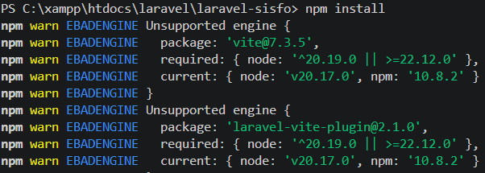
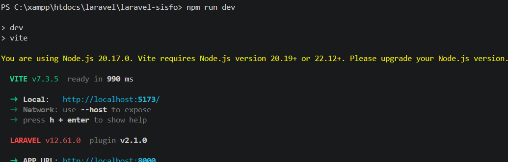
Selanjutnya dilakukan eksekusi struktur tabel awal bawaan framework ke database menggunakan perintah migrasi. Halaman login (/login) dan registrasi (/register) kini siap diakses secara normal di peramban web dengan tampilan Bootstrap standar.
php artisan migrate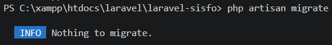
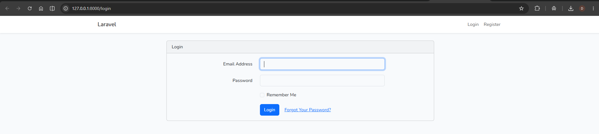
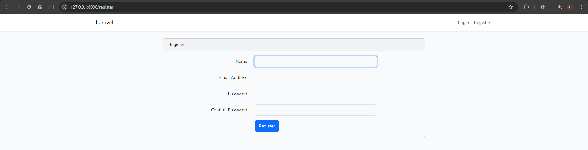
2. Kustomisasi Skema Tabel Pengguna & Database Seeding
Penulis mencoba melakukan pendaftaran akun pengujian pertama bernama Dede Bintang. Akun berhasil dibuat dan otomatis dialihkan masuk ke dalam komponen beranda otorisasi internal (/home).
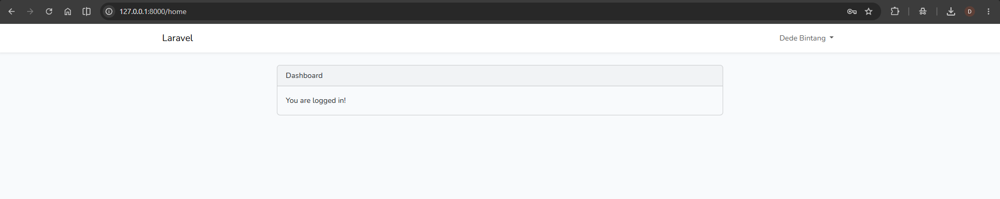
Untuk memverifikasi integritas data, penulis memeriksa baris record tabel users yang baru tersimpan melalui platform administrasi basis data phpMyAdmin. Informasi data masukan, enkripsi sandi, beserta timestamp tercatat secara presisi.
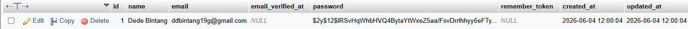
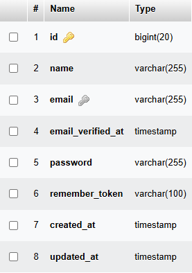
Sesuai spesifikasi kebutuhan Sistem Informasi Sekolah, skema default tabel ini perlu dimodifikasi dengan menambahkan tiga kolom baru yaitu username, level, dan status. Penulis menghasilkan berkas modifikasi skema lewat perintah migrasi kustom:
php artisan make:migration costum_table_users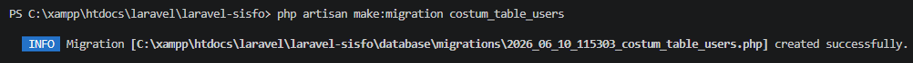
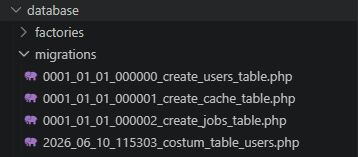
Berkas baru tersebut kemudian dimodifikasi pada bagian blok fungsi metode up() dan fungsi rollback metode down() seperti pada contoh kode program berikut:
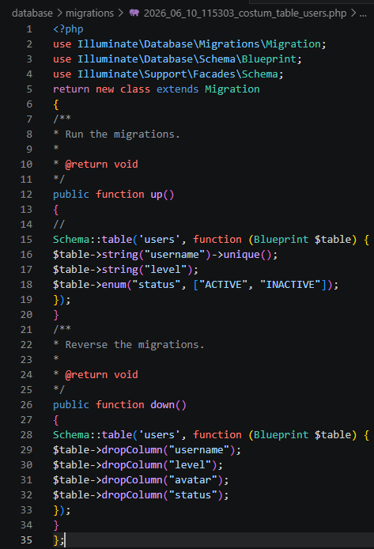
Perintah migrasi dijalankan ulang untuk memperbarui skema database. Setelah berhasil dieksekusi, kolom tambahan berupa username, level, dan enum status terstruktur dengan benar pada baris bawah tabel users di phpMyAdmin.
php artisan migrate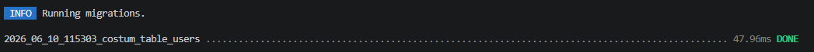
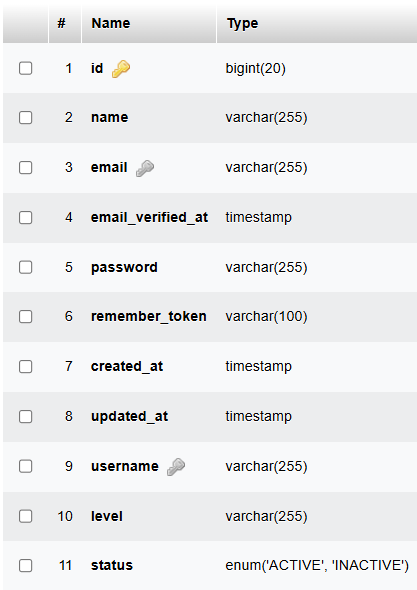
Untuk mempermudah proses pengisian data pengguna berlevel administrator secara instan tanpa registrasi manual, dibuat sebuah berkas komponen seeder baru melalui terminal:
php artisan make:seeder AdminSeeder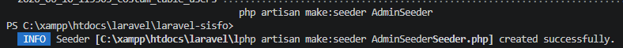
Pada file AdminSeeder.php, dituliskan logika instansiasi objek model pengguna baru dengan parameter level yang dibungkus ke dalam format JSON (json_encode) demi mendukung skalabilitas hak akses majemuk (multiple roles):
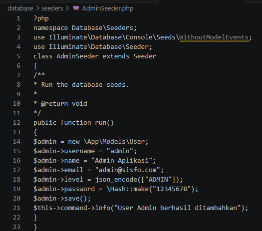
Proses seeding dijalankan dengan memanggil sub-class spesifik tersebut melalui terminal CLI:
php artisan db:seed --class=AdminSeeder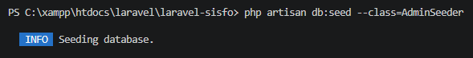
3. Integrasi Template & Layouting Antarmuka Admin (SB Admin 2)
Agar tampilan antarmuka terkesan profesional, penulis melakukan proses slicing template gratis SB Admin 2 berbasis framework Bootstrap 4. Langkah awal dilakukan dengan menyalin seluruh direktori folder aset statis bawaan template (CSS, JS, Vendor) ke dalam folder public/sbadmin milik Laravel.

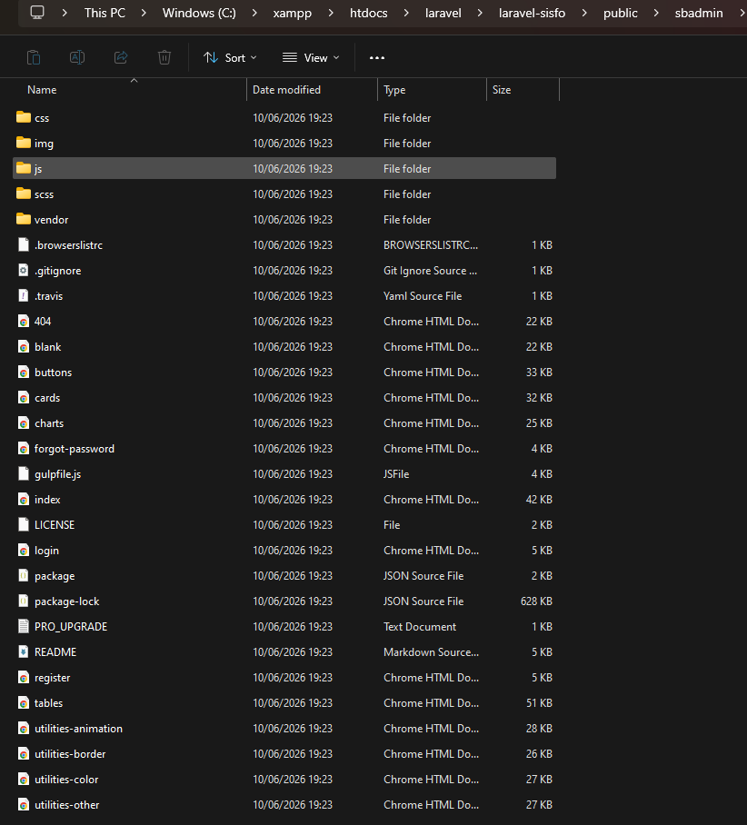
Selanjutnya dilakukan perombakan berkas layout master bawaan paket auth (resources/views/layouts/app.blade.php) untuk memuat kerangka dasar HTML halaman login SB Admin 2, dengan memanggil seluruh berkas aset menggunakan helper bawaan Laravel {{ asset(...) }}.
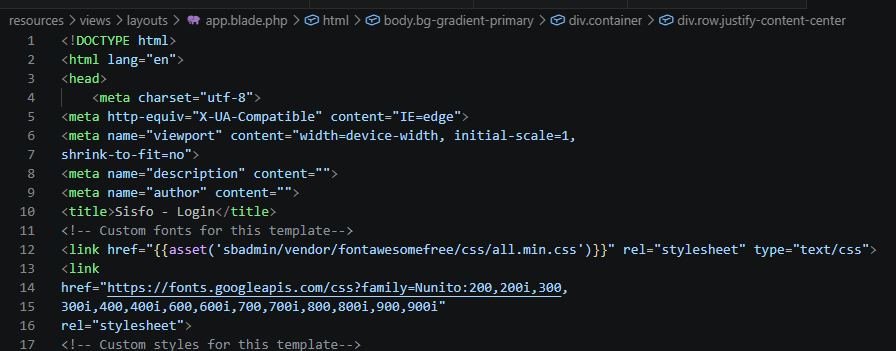
Guna merancang halaman kerja internal setelah login, penulis menerapkan teknik modulasi antarmuka dengan membuat sebuah file layout utama baru bernama main.blade.php di dalam folder layouts.
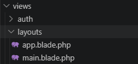
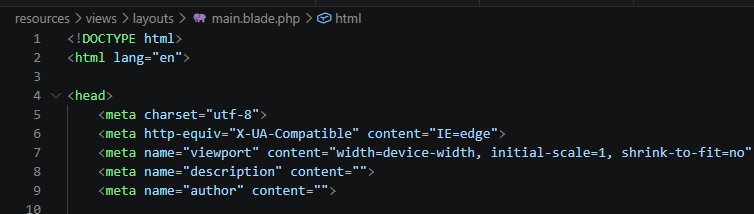
Struktur layout dashboard yang besar dipecah ke dalam beberapa file parsial menggunakan direktif blade @include(). Penulis membuat file sidebar.blade.php untuk menampung baris kode komponen navigasi menu samping:
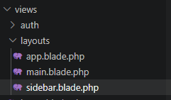
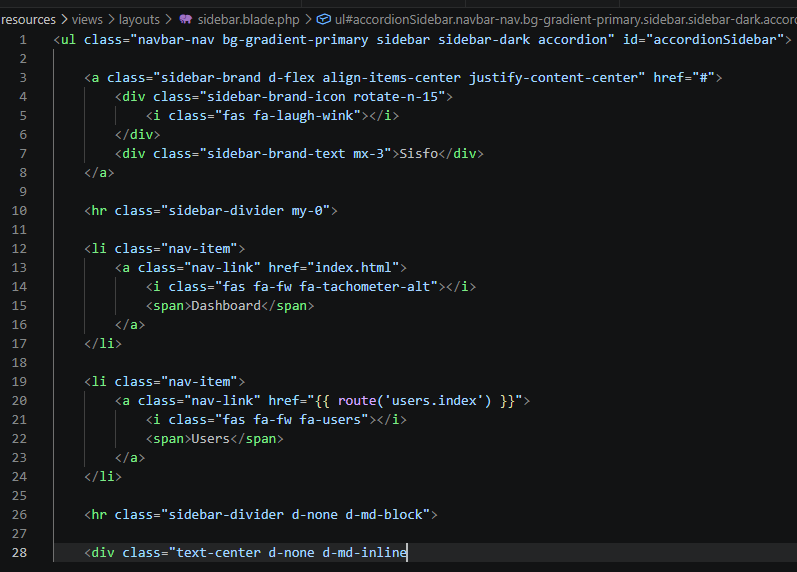
Hal yang sama diterapkan pada komponen bar navigasi atas melalui pembuatan file topbar.blade.php, yang memuat potongan kode pencarian, notifikasi sistem, dan menu profil pengguna:
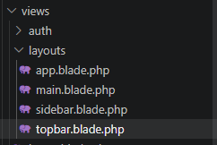
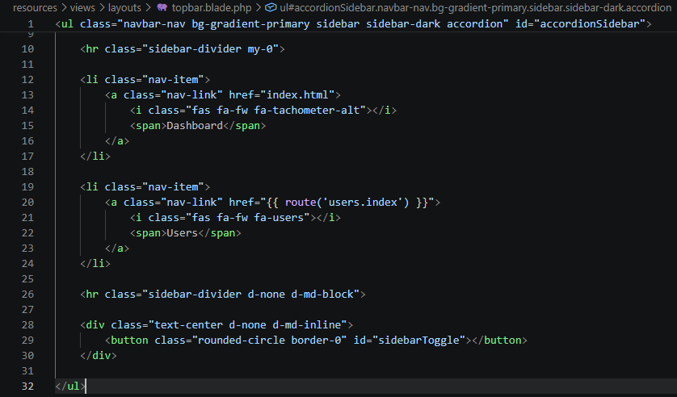
Komponen view beranda (home.blade.php) diatur kembali agar mewarisi layout utama baru dengan menambahkan fungsi direktif pewarisan @extends('layouts.main').
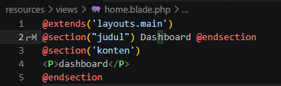
Hasil pengujian render pada browser menunjukkan layout dashboard admin berhasil memuat kombinasi sidebar biru minimalis khas SB Admin 2 secara fungsional dan responsif.
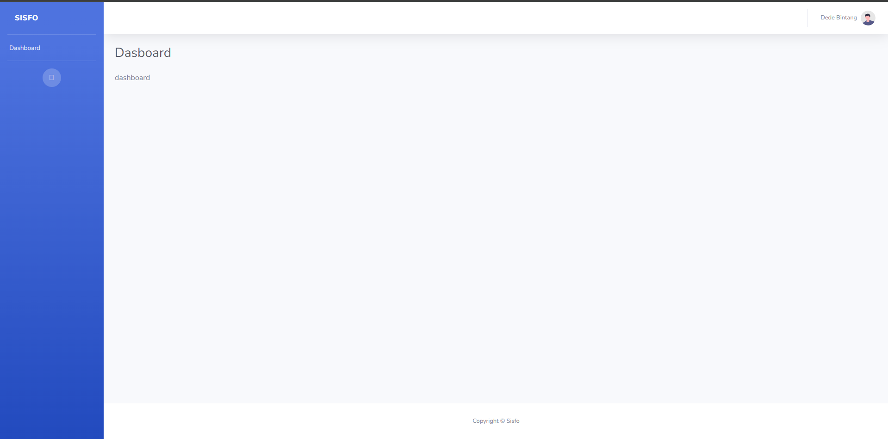
4. Pembuatan Resource Controller & Alur Kerja CRUD Manajemen Users
Inti fitur pengerjaan modul manajemen data dilakukan dengan membuat sebuah file controller terintegrasi metode resource lewat satu instruksi praktis pada terminal:
php artisan make:controller UserController --resource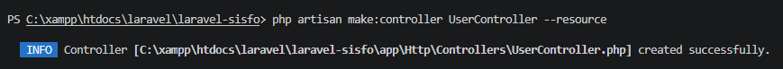
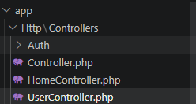
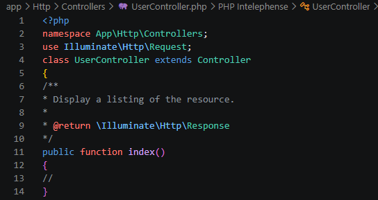
Di bawah ini adalah rincian pengerjaan alur operasi logika CRUD data pengguna yang diimplementasikan ke dalam metode fungsi UserController beserta pembuatan file komponen view-nya:
A. Operasi CREATE (Tambah Data Pengguna Baru)
Pada tindakan fungsi create(), instruksi diarahkan untuk memanggil halaman form input data pengguna (user.create). Berkas view tersebut diletakkan di dalam folder terpisah bernama resources/views/user/create.blade.php.
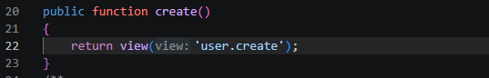
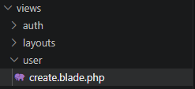
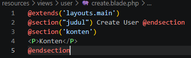
Form tambah user dibangun menggunakan elemen form Bootstrap grid, lengkap dengan komponen selektor bertipe list-box multiple select untuk menentukan peran (level) jabatan pengguna aplikasi.
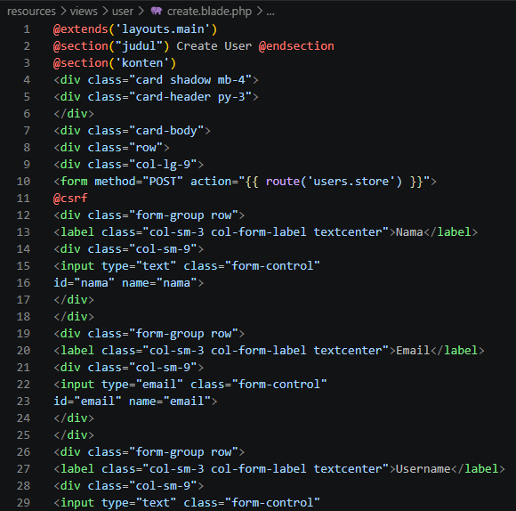
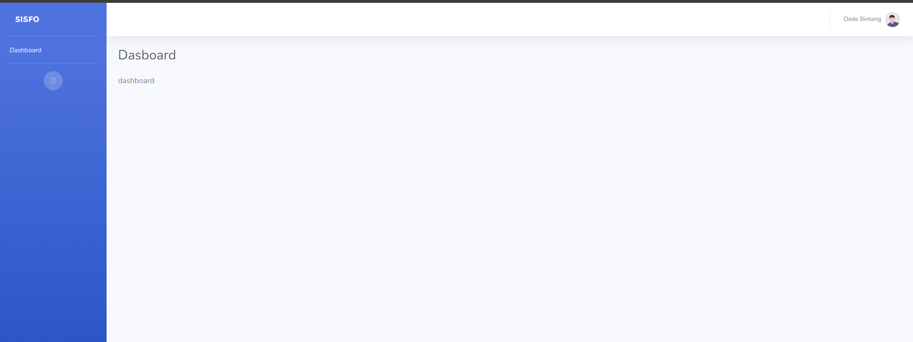
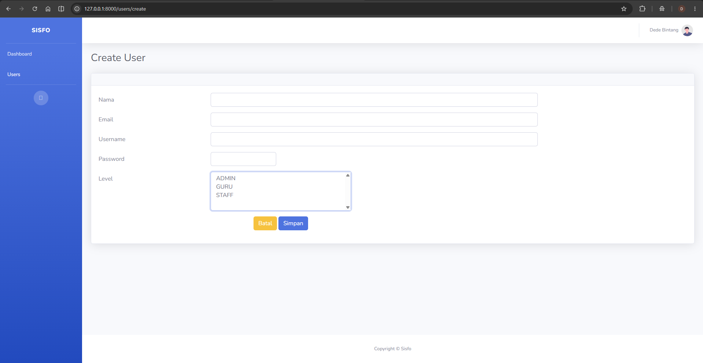
Proses penyimpanan data ditangani oleh tindakan fungsi store(). Fungsi menangkap parameter input dari form masukan, melakukan hashing pada field kata sandi (Hash::make), mengonversi nilai array level ke format teks JSON via json_encode, lalu menyimpannya ke database sebelum dialihkan kembali menuju halaman indeks utama dengan membawa status flash data.
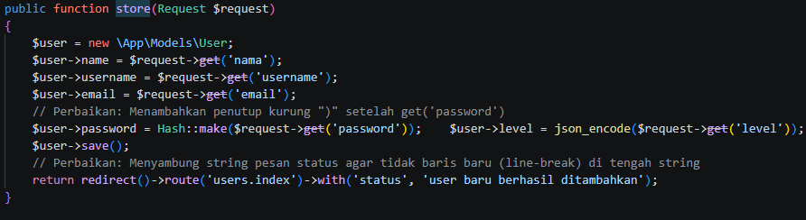
B. Operasi READ (Menampilkan Tabel Daftar Pengguna)
Metode fungsi index() bertugas mengambil seluruh koleksi baris data dari database menggunakan metode Eloquent model User::all(), kemudian mengirimkannya ke file view indeks.
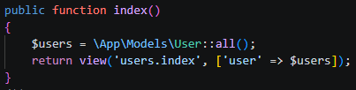
Pada file index.blade.php, data pengguna diulang ke dalam bentuk baris-baris tabel HTML secara dinamis menggunakan perulangan direktif @foreach ($users as $user).
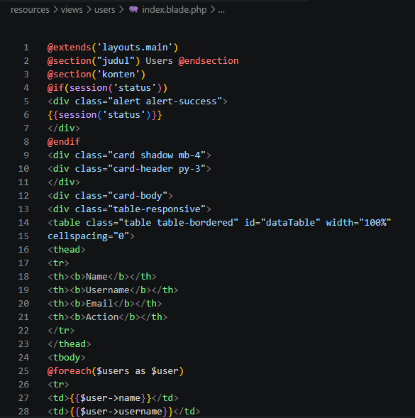
C. Operasi UPDATE (Mengubah Data Pengguna)
Untuk menangani proses pengeditan data, tindakan fungsi edit($id) dipasang perintah penarikan data pengguna spesifik berdasarkan parameter ID unik menggunakan pengaman kegagalan fatal query User::findOrFail($id).
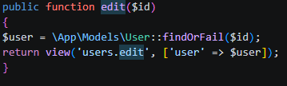
Form edit (edit.blade.php) dirancang mirip dengan form tambah data, namun dilengkapi dengan pengiriman metode tersembunyi <input type="hidden" name="_method" value="PUT"> serta otomatis mengisi kolom input form (old value/current data binding) sesuai data pengguna yang akan disunting.
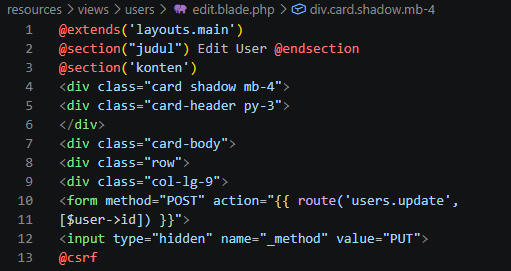
Logika pembaruan data diproses di dalam tindakan fungsi update(). Data nama pengguna dan level hak akses diperbarui, lalu disimpan kembali ke tabel basis data lewat pemanggilan metode interaksi $user->save().
5. Hasil Pengujian Akhir Aplikasi
Tahap akhir praktikum diverifikasi dengan melakukan uji coba simulasi penuh terhadap fitur manipulasi data pengguna langsung pada peramban web:
Penulis mencoba menyunting record data pengguna "admin" menjadi nama kustom baru berupa "abinnnnnn" berlevel ADMIN pada halaman form edit user:
Setelah menekan tombol "Simpan", sistem berhasil memproses perubahan data tersebut di latar belakang dan secara otomatis mengalihkan pengguna kembali ke halaman indeks utama. Halaman web sukses menampilkan banner pesan sukses hijau kustom bertuliskan "User berhasil diubah", serta memperbarui isi data pada baris tabel pengguna dengan benar.
Kesimpulan
Melalui praktikum ke-9 ini, pemanfaatan blueprint Resource Controller terbukti mampu memangkas waktu penulisan kode perutean (routing) dan penataan struktur logika fungsi backend secara signifikan di Laravel[cite: 592]. Di sisi lain, pembagian tata letak antarmuka blade ke dalam beberapa file modular parsial (layouts, sidebar, topbar) memberikan tingkat fleksibilitas yang tinggi dalam proses pemeliharaan komponen web di masa mendatang[cite: 499].